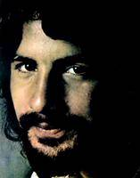
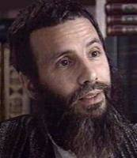

|
|
Cat
will never try to be on a hot tin roof, will he?
By Jamal Hasan
I used to like it a lot singer Cat
Stevens’ songs in my halcyon days of youth. Oh, what a
golden and forceful voice he had when he was young and
energetic. Even today, whenever I have a quiet moment to
myself, I enjoy listening to his golden oldies like "Morning
has broken" or "I’m bein’ been followed by a moon shadow."
 
The name Stephen Demetri Georgiou
sounds Greek to me. Presumably, his Greek Cypriot father
wanted to keep his side of the family heritage intact. But
the child had to break the rule sometime. The name Cat
Stevens sounded more mainstream for a rock star. Thus, the
change. Cat Stevens’ picture on the above left became a
household image during his rock n’ roll days. In a
democratic permissive society, anybody who is changing his
or her religion does not typically raise any eyebrow. But
when Cat Stevens metamorphosed to be Yusuf Islam, and
growing beard (picture on the above right) to the length as
prescribed in Sahih Hadith, many pop scene watchers realized
that that was the end of his rock n’ roll career. Cat’s
conversion to Islam is not very unusual. Today, we see many
Westerners convert to Islam when there lives are locked into
sinkhole. The notorious shoe-bomber British born Richard
Reid to American dirty bomber Jose Padilla have one thing in
common. Circumstances had failed to give them a life on a
straight path. Their propensity to petty thievery, thuggery,
etc., led them to land on a regimented primitive dogmatic
religion. Cat Stevens had a similar situation. Sex, drugs,
and rock n’ roll took him to the bottom of the dungeon.
After searching for peace in "all the wrong places," he
found Islam. According to the former rock star, he found
"road to salvation" after reading the Koran. Cat said of the
Koran, "I had all the jig-saw puzzle pieces but the light
was switched off. The Koran turned on the light." Aha! Isn’t
it quite amazing?
Cat Stevens’ metamorphosis to an
Arabicized, medieval dogma that was later pursued by the
likes of Johny Lindh, Richard Reid, Jose Padilla, or David
Hicks. The quintessential Maulana Yusuf Islam with truly
Islamic beard fell into the trap of pure political Islam,
which is commonly called the Wahhabist Islam. From the day
one of his Muslim identity, he was well aware that he was
destined to serve Allah and his Muslim brethren. If Cat
chose to be a follower of Sufi Islam, he probably could have
continued to be a singer. But, in Wahhabism? No such thing
is permitted. Not only that, poetry, art, any creative
artistic human endeavor is simply a no-no in the book of
Cat’s “peaceful” Islam. Most of other religions have not
abandoned the finer side of human quality. Christian,
Buddhist, or even a Hindu priest can enjoy a Bach,
Tchaikovsky, or Schubert in a packed hall. For a Muslim
cleric endeavoring such venture, is a sure road to hell.
Therefore, the “cool cat” Cat Stevens aka Yusuf Islam
slipped away from the "decadent" Western musical scene very
rapidly. His abandonment of music career did not finish the
up beating of his vocal cord. He was the leading voice from
the Western stock who recited the lilting tune of Koran and
sang political songs for Muslim suffering brethren. Don’t we
already know that a true Islamist such as Cat has to be a
good mis-representative and double-talker to enhance his
agenda! In a recent interview with a reporter of ABC News’
20/20, Yusuf proved that once again. While asked why he
abandoned his music career, his reply was, "The drug
addiction and all the corruption that comes with the pop
scene was not good for me." Maulana Yusuf Islam deliberately
avoided being truthful. That is, in the Wahhabist worldview,
there is no room for "Peace Train."
Whenever any Westerner converts to
Islam, it gives a big boost to Islamists all around the
world. I had the chance to see Yusuf Islam flyers in local
mosques where devotees were proudly talking about the great
pioneer of Islam. Yusuf had a very busy Islamic life in
England. He was involved in quite a few charities and
humanitarian (oh! Islamic activities) in order to help
causes of earthlings (Muslims) of Bosnia, Kosovo, and
Kashmir. His truncated sense of humanity gave a damn about
the sufferings of non-Muslim people of our planet. After
all, to a Muslim devotee, life of a non-Muslim carries no
value whatsoever.
Then came the dastardly attack of nine
eleven. Like many Muslims of the world, Cat Stevens had to
go for some soul searching. His devotion to help Muslim
people’s cause faced a sudden pause. Apparently, the singer
turned Islamic zealot had to tone down his rhetoric. Salman
Rushdie noted that and commented in a post 9/11 essay that
Cat Stevens became a "pussy cat." It may not be coincidental
that after the tragedy of September 11, 2001, Cat’s beard
trimmed up a bit and he committed the mortal sin of
re-recording of his un-Islamic golden oldies probably like
rest of us he needed the dough.
Like any hard-core Wahhabist
ideologue, his ties to global Jihadists are not an
impossibility. After all, it was Yusuf Islam who carpingly
had said on the record that according to teaching of Islam,
an apostate like Salman Rushdie did not have the right to
live. Most recently in ABC News’ 20/20 program, Maulana
Yusuf Islam refused to denounce suicide bombings in Israel.
It may be mention worthy here that he made it abundantly
clear on many occasions that the suicide bombers have
"hijacked" Islam. Is it really so, Mr. Cat, I mean Mr.
Islam? Didn’t the 9/11 hijackers reflect the ultimate agenda
of Wahhabism, which sadly became the true spirit of your
life!
Then the bomb shell came last month.
The goodie two shoes Cat was deported from USA back to UK.
Of course, it was America’s Homeland Security’s lack of
alertness, or undesired mix up. Yusuf Islam being on USA’s
watch list even allowed to board a United Airlines Flight en
route to Dulles International Airport. Where on earth a
person on Uncle Sam‘s "no-fly" list could be allowed to
board a U.S. bound plane? The rationale was a typical
bureaucratic bungling. The list, as was explained later by
the concerned authority contained the name "Usuf" instead of
"Yusuf". Anyway, Cat must have known that after September 11
of 2001, the USA has turned into a brand new world. There is
now almost zero tolerance for appeasers of global Jihadists.
As the time goes by, noose is tightening. Alamoudi and Yusuf
Islam might have been welcome figures at the White House a
while ago. Now, no more. Poor Cat should have to think twice
if he dares to dance on a hot tin roof once again.
=================================================
Jamal Hasan writes from USA. His email
address is
poplu@hotmail.com
|
|
|